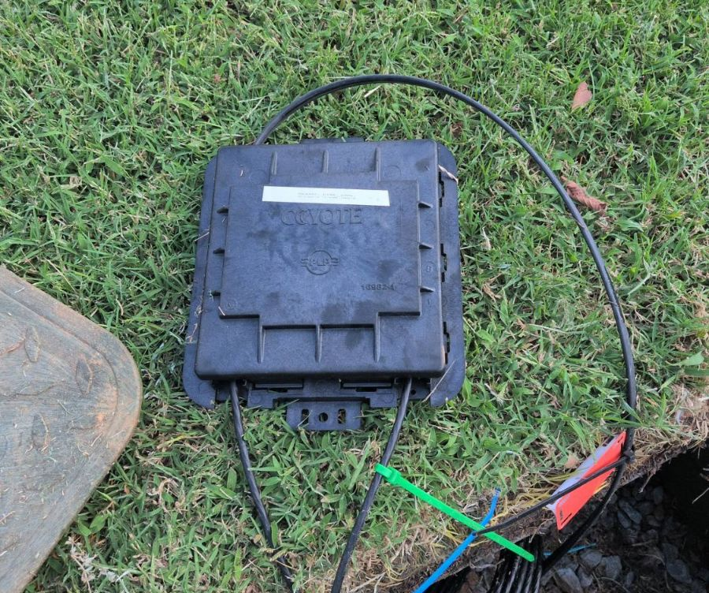
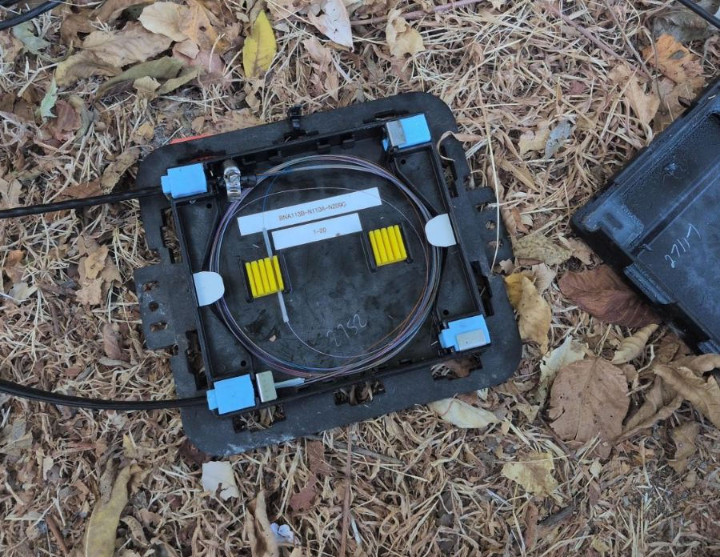
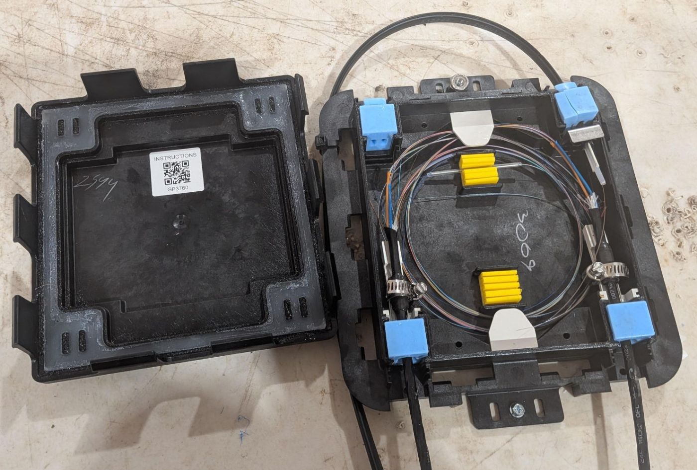

Splice SchoolCoyote closures & NIUs
A customer's internet travels as light through a strand of glass about as thick as a hair. Your job is to join those strands so the light passes through the joint with almost nothing lost. This course takes you there one station at a time. Tap, flip, sort, and splice as you go. Each station lights up when you finish it.
Follow the light
Tap each stop along the path to see where the Coyote and the NIU fit. Tap all six to light this station.
Where does your splice fit?
Light leaves the hub, rides a big cable to a Coyote closure near the street, then a small drop cable carries it to the NIU on the customer's house. Every joint along that path is a splice somebody made.
Fiber is a glass hair that carries light. A splice melts two of those hairs together so perfectly that the light can't tell there was ever a break. The Coyote is where the big cable branches out. The NIU is where it arrives at the house.
Safety first
The two biggest hazards in splicing are hard to see: glass slivers smaller than an eyelash and laser light your eyes can't see at all. These six rules cover both.
Never look into a fiber or connector
Network lasers run on wavelengths you can't see, and a fiber can be live. Check with a power meter, not your eye.
Every shard goes in the shard container
A fiber sliver can work into your skin and is almost invisible. Never on the floor, the edge of the mat, or in your pocket.
Safety glasses on the whole time
Cleaving and snapping fiber can flick tiny pieces of glass toward your face.
No food or drink at the splice area
Glass on your fingers ends up in your mouth. Wash your hands when you finish.
Let the alcohol dry
Isopropyl alcohol is flammable. Keep it capped and let it evaporate before the splicer fires its arc.
Secure the site before you kneel
Coyote closures sit near roads and in handholes. Vest on, cones out, and check for traffic, standing water, wasps, and snakes.
Pack your kit
You're heading to a Coyote job. Tap everything that belongs in your setup, then press Check my kit.
The toolbox
Twelve tools do almost all the work. Tap each card to flip it and learn what the tool does plus one pro tip. Flip all twelve to light this station.
Flipped 0 of 12
Next: The color code →The color code
Every fiber looks the same except for its color. The industry standard (TIA-598) uses the same 12 colors, in the same order, for fibers inside a tube and for the tubes inside a cable. Splice the wrong color and a customer loses service, so this one is worth memorizing.
Boys Often Get Bored Sitting While Rain Beats Your Very Rusty Awning.
Blue, Orange, Green, Brown, Slate, White, Red, Black, Yellow, Violet, Rose, Aqua.
“Tube 2, fiber 3” means the orange tube, green fiber. In cables with more than 12 tubes or fibers, the colors repeat with a black stripe (13 is blue with a black stripe).
Get 5 right in a row to light this station.
The splice
Good news: the fusion splice itself is the same 10 steps whether you're kneeling at a Coyote or standing at an NIU. Learn it once here. Then prove it at the splicer and put the steps in order.
Your turn at the splicer
After you load the fibers, the splicer shows you both ends on its screen along with the cleave angle. It's your call: splice it or re-cleave. Five rounds, and you need 4 right.
Look at both ends. Splice it or re-cleave?
Put it in order
Tap the steps in the order you'd do them. A wrong tap just shakes, so no penalty.
At the Coyote
The Coyote is a small, flat splice closure that sits in a handhole at ground level. Fibers from the distribution cable are spliced here and sent out on drop cables toward individual homes. You lift it out on its cable slack, open the lid, splice on its tray, and seal it back up tight.
Think of it as a waterproof lunchbox for glass. Cables come in through blue seals at the corners, the spare fiber coils around the tray, and your splices sit in the yellow holders. Everything inside has to survive years of rain and mud after the lid snaps shut.


Inside the Coyote
This is a real open Coyote. Tap each numbered dot, or a part name below the photo. Explore all 8 parts to light this station (along with the checklist).

Lid on the left, base on the right
Each part tells you what it does and what you do with it on the job.
Coyote job checklist
The whole job, start to finish. Check each step off as you read it. Your company's method of procedure (MOP) sets the exact steps for your area.
At the NIU
The NIU (Network Interface Unit) is the box on the outside of the customer's home. The drop cable from the Coyote ends here. You splice the drop fiber to a factory connector (a pigtail), store the slack neatly, and hand clean light to the house.
The NIU is the network's front door. It's the last box on our side before the customer's equipment. The splice is the same one you already learned. What's new is the connector, and connectors have to be spotless.
Inside the NIU
Explore all 7 parts. Follow the yellow fiber from where the drop comes in to where the light leaves for the house.
A green connector is APC (its end is polished at an angle). A blue connector is UPC (flat). Never plug APC into UPC. The ends don't meet properly, the loss is high, and both end faces can be damaged.
NIU job checklist
Check each step off as you read it.
Coyote vs. NIU at a glance
Same splice, different jobs around it.
| Coyote | NIU | |
|---|---|---|
| Where it lives | In a handhole at ground level. Lift it out on its cable slack to work. | Outside wall of the customer's home |
| What comes in | Distribution cable plus drop cables, through the blue port seals | One drop cable |
| How many fibers | Several. The tray label shows the fiber range. | Usually one |
| What you splice | Fiber to fiber, per the splice plan | Drop fiber to an SC/APC pigtail |
| How you check it | VFL or OTDR, then update the tray label | Power meter reading, ONT lights up |
| Before you leave | Wipe the seal, snap the lid, set it back in the handhole, document | Clean connector, close lid, record reading |
Final check
Ten questions from everything you just did. Score 8 or better to earn your certificate. You get an explanation after every answer, right or wrong.